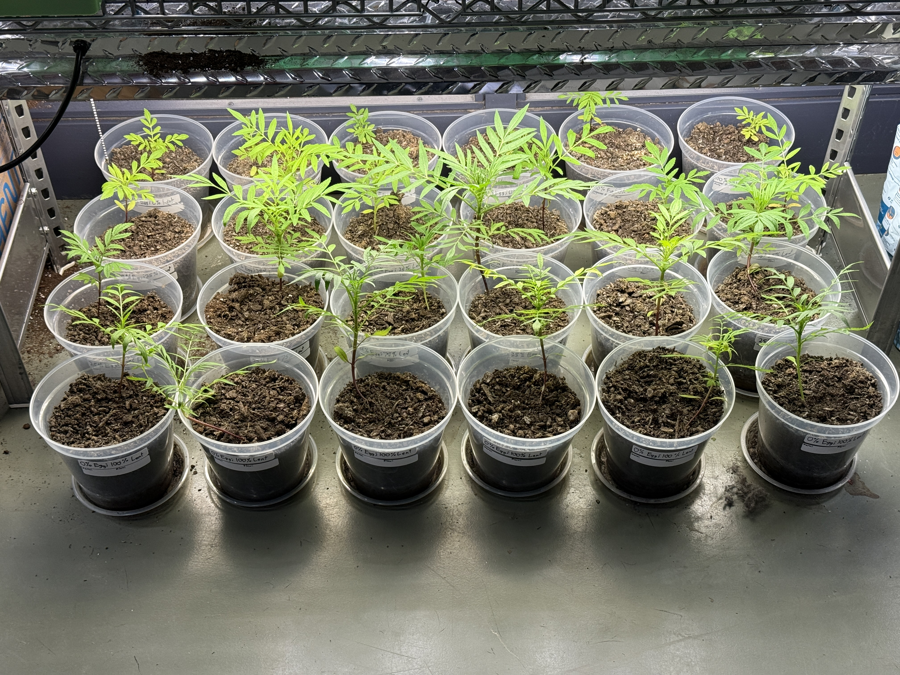
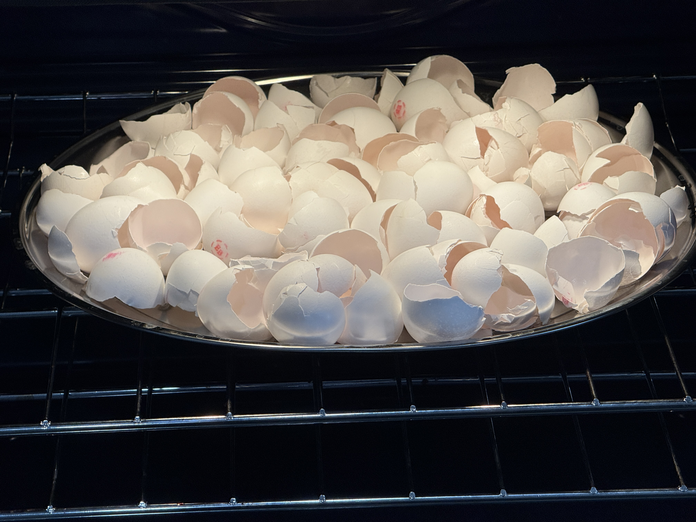
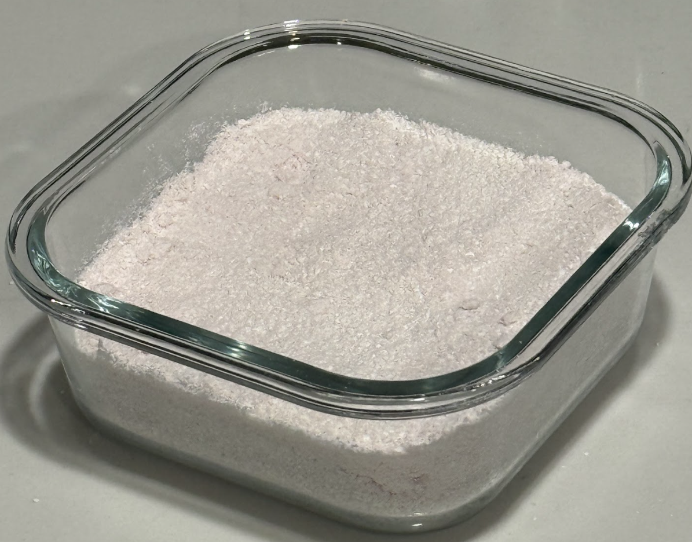

- Eggshell powder found to increase growth and yield
- Rice boiling water tends to increase growth
- Legumes are high in protein content
- African marigolds (Tagetes erecta) are viable sources of polyphenols
- Inorganic fertilizers have many downsides
- Organic fertilizers often require specific conditions (e.g. lime)
- Food waste fertilizers boosting growth have many benefits
- Cost-effective (would be discarded)


Research Hypothesis:
- Eggshell fertilizer motivates an increase in plant growth rate for the marigold plants
- Calcium from the eggshells promotes stable plant growth
Prediction:
Growth rate over the eight weeks would be significantly different between:
- Low proportion of eggshell water to lentil boiling water
- The fertilizer composed only of eggshells (control)